Junqi Shi, Ming Lu, Xingchen Li, Anle Ke, Ruiqi Zhang, Zhan Ma
Junqi Shi、Ming Lu、Xingchen Li、Anle Ke、Ruiqi Zhang、Zhan Ma。
School of Electronic Science and Engineering, Nanjing University, Nanjing 210023, China
南京大学电子科学与工程学院，中国南京210023。
Corresponding author: {minglu, mazhan}@nju.edu.cn
通信作者：{minglu, mazhan}@nju.edu.cn。
Code: https://njuvision.github.io/DiT-IC/
代码：https://njuvision.github.io/DiT-IC/。
This CVPR paper is the Open Access version, provided by the Computer Vision Foundation.
本 CVPR 论文为计算机视觉基金会提供的开放获取版本。
Except for this watermark, it is identical to the accepted version; the final published version of the proceedings is available on IEEE Xplore.
除这段水印外，内容与接收版本相同；论文集正式版本可在 IEEE Xplore 获取。
根据所附 11 页 PDF 整理。英文段落后接中文；公式共用，表格保留数值。图表已插入对应图注上方，参考文献保留原著录信息，并附中文题名。
(a) Perceptual Visualization Comparison.
（a）感知效果可视化比较。
DiT-IC achieves more consistent reconstructions with over 35% bitrate savings.
DiT-IC 在节省超过35%码率的同时，获得内容更一致的重建结果。
(b) Decoding latency on 1024x1024 resolution (c) Training GPU Memory (GB) (d) Inference GPU Memory (GB)
（b）1024×1024 分辨率下的解码延迟；（c）训练显存占用（GB）；（d）推理显存占用（GB）。
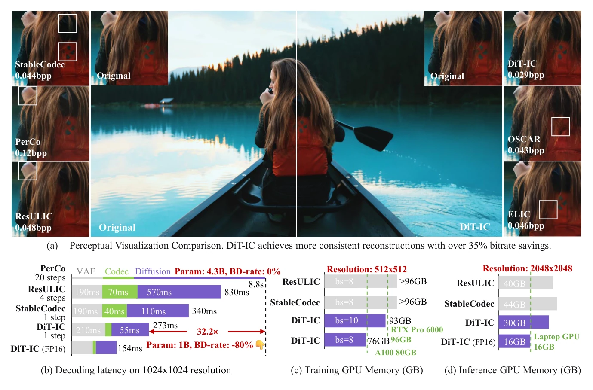
Figure 1. Overview of reconstructed results and efficiency of our proposed DiT-IC.
图1. DiT-IC 重建结果与效率概览。
Diffusion-based image compression has recently shown outstanding perceptual fidelity, yet its practicality is hindered by prohibitive sampling overhead and high memory usage.
基于扩散的图像压缩近年来表现出优异的感知保真度，但高昂的采样开销和较大显存占用限制了其实用性。
Most existing diffusion codecs employ U-Net architectures, where hierarchical downsampling forces diffusion to operate in shallow latent spaces (typically with only 8× spatial downscaling), resulting in excessive computation.
现有扩散编解码器大多采用 U-Net 架构，其层级下采样迫使扩散在较浅的潜空间中运行，通常仅相对原图下采样8倍，导致计算量过大。
In contrast, conventional VAE-based codecs work in much deeper latent domains (16×–64× downscaled), motivating a key question: Can diffusion operate effectively in such compact latent spaces without compromising reconstruction quality?
相比之下，传统基于 VAE 的编解码器在下采样16至64倍的更深潜空间中工作，由此引出一个关键问题：扩散能否在如此紧凑的潜空间中有效运行，同时不损害重建质量？
To address this, we introduce DiT-IC—an Aligned Diffusion Transformer for Image Compression—which replaces the U-Net with a Diffusion Transformer capable of performing diffusion in latent space entirely at 32× downscaled resolution.
为此，我们提出 DiT-IC，即用于图像压缩的对齐扩散 Transformer，以扩散 Transformer 替代 U-Net，使扩散始终在下采样32倍的潜空间分辨率下进行。
DiT-IC adapts a pretrained text-to-image multi-step DiT into a single-step reconstruction model through three key alignment mechanisms:
DiT-IC 通过三个关键对齐机制，将预训练的文本到图像多步 DiT 适配为单步重建模型：
(1) a variance-guided reconstruction flow that adapts denoising strength to latent uncertainty for efficient reconstruction;
（1）方差引导的重建流，根据潜变量不确定性调节去噪强度，实现高效重建；
(2) a self-distillation alignment that enforces consistency with encoder-defined latent geometry to enable one-step diffusion;
（2）自蒸馏对齐，保持与编码器定义的潜空间几何的一致性，实现单步扩散；
and (3) a latent-conditioned guidance that replaces text prompts with semantically aligned latent conditions, enabling text-free inference.
（3）潜变量条件引导，用语义对齐的潜变量条件替换文本提示，实现无文本推理。
With these designs, DiT-IC achieves state-ofthe-art perceptual quality while offering up to 30× faster decoding and drastically lower memory usage than existing diffusion-based codecs.
通过这些设计，DiT-IC 获得领先的感知质量，相较现有扩散编解码器，解码速度最高提升约30倍，显存占用也显著降低。
Remarkably, it can reconstruct 2048 × 2048 images on a 16 GB laptop GPU.
尤其是，它能够在配备16 GB显存的笔记本 GPU 上重建2048×2048图像。
Recent diffusion-based generative models [9, 39, 50] have achieved remarkable advances in visual synthesis, producing photorealistic and semantically controllable images.
近期基于扩散的生成模型 [9,39,50] 在视觉合成方面取得显著进展，能够生成逼真且语义可控的图像。
However, for a fundamental low-level task like image compression, which demands practical efficiency—low latency and memory economy—most diffusion-based compression approaches [4, 16] remain constrained by heavy sampling overhead and substantial memory usage.
然而，图像压缩这类基础低层视觉任务要求低延迟和低显存占用等实用效率，大多数扩散压缩方法 [4,16] 仍受高采样开销与显存需求的限制。
A key source of inefficiency lies in the spatial scale where diffusion operates.
低效率的重要来源是扩散所处的空间尺度。
Existing diffusion-based codecs typically perform denoising in relatively shallow latent spaces (e.g., 8× spatial reduction), resulting in significant computational and memory burdens.
现有扩散编解码器通常在较浅的潜空间中去噪，例如空间下采样8倍，带来明显计算与显存负担。
In contrast, modern learned codecs naturally operate in much deeper latent domains, often with 16× [12, 24], 32× [16], or even 64× [8, 53] spatial reductions.
相比之下，现代学习式编解码器通常在更深的潜空间中工作，空间下采样倍数常为16倍 [12,24]、32倍 [16]，甚至64倍 [8,53]。
This discrepancy motivates a central question: Can diffusion operate effectively in deeply compressed latent spaces to enable efficient reconstruction without sacrificing fidelity?
这一区别引出核心问题：扩散能否在深度压缩的潜空间中有效运行，实现高效重建而不牺牲保真度？
Most existing diffusion-based codecs [11, 16, 22, 53] employ U-Net-based diffusion architectures, whose hierarchical downsampling further reduces the spatial scale (Fig. 2), making them poorly suited for deeply compressed latents.
大多数现有扩散编解码器 [11,16,22,53] 使用 U-Net，其层级下采样进一步缩小空间尺度，如图2所示，因此不适合深度压缩潜变量。
Recently, Diffusion Transformers (DiTs) [5, 33, 47] have emerged as a compelling alternative, replacing U-Nets with cascaded transformer blocks that maintain a constant spatial resolution throughout the denoising process.
近年来，扩散 Transformer（DiT）[5,33,47] 成为有吸引力的替代方案，以级联 Transformer 块取代 U-Net，并在整个去噪过程中保持空间分辨率不变。
This architectural property makes DiTs naturally compatible with deeply compressed latent domain and provides a promising foundation for efficient diffusion modeling.
这种架构使 DiT 天然适合深度压缩潜空间，为高效扩散建模提供了有前景的基础。
However, directly transplanting pretrained diffusion models into compact, compression-oriented latent spaces often results in severe degradation.
然而，直接将预训练扩散模型移植到面向压缩的紧凑潜空间，往往造成严重性能下降。
The core challenge lies in the mismatch between generative and reconstructive objectives.
核心挑战是生成目标与重建目标之间的不匹配。
Unlike text-to-image diffusion, which begins from pure Gaussian noise, image compression starts from structured, entropy-constrained latents that already lie near the data manifold.
文本到图像扩散从纯高斯噪声出发，而图像压缩从具有结构、受到熵约束且已接近数据流形的潜变量出发。
This structured initialization significantly narrows the sampling distribution, suggesting that iterative multi-step denoising may be redundant—and that even single-step reconstruction could be achievable.
这样的结构化初始化显著缩小采样分布，意味着迭代多步去噪可能是冗余的，甚至可以实现单步重建。
Yet naïvely fine-tuning generative diffusers fails to exploit this property, often leading to misaligned feature manifolds and suboptimal reconstructions.
然而，直接微调生成式去噪模型无法充分利用这一特性，往往导致特征流形失配及次优重建。
To overcome these challenges, we propose DiT-IC—an Aligned Diffusion Transformer for Image Compression—which adapts a pretrained text-to-image multi-step DiT into an efficient one-step reconstruction model operating in a 32× latent diffusion space.
为解决这些问题，我们提出 DiT-IC，将预训练的文本到图像多步 DiT 适配为在32倍下采样潜空间中运行的高效单步重建模型。
Our method introduces three complementary alignment mechanisms that jointly bridge the gap between diffusion generation and compression reconstruction:
该方法引入三种互补的对齐机制，共同弥合扩散生成与压缩重建之间的差距：
Variance-Guided Reconstruction Flow. We reinterpret the denoising trajectory as an adaptive reconstruction flow, where spatially varying uncertainty determines local denoising strength.
方差引导的重建流。我们将去噪轨迹重新解释为自适应重建流，由随空间位置变化的不确定性决定局部去噪强度。
By mapping latent variance to pseudotimesteps, DiT-IC collapses iterative denoising into a single transformation that preserves fine details while maintaining decoding efficiency.
DiT-IC 将潜变量方差映射为伪时间步，将迭代去噪压缩为单次变换，在保持解码效率的同时保留精细细节。
Self-Distillation Alignment. To stabilize one-step learning without external supervision, we introduce a self-distillation mechanism that enforces consistency between the denoised output and the encoder’s frozen latent representation, effectively distilling multi-step diffusion behavior into a single forward pass.
自蒸馏对齐。为在没有外部监督的情况下稳定单步学习，我们引入自蒸馏机制，约束去噪输出与冻结编码器的潜在表示保持一致，将多步扩散行为蒸馏为一次前向传播。
Latent-Conditioned Guidance. We replace text-based conditioning with a lightweight latent-conditioned projection derived from compressed representations.
潜变量条件引导。我们用从压缩表示得到的轻量潜变量条件投影，替代文本条件。
By contrastively co-aligning latent and textual embeddings during training, the model retains semantic priors from the pretrained DiT while eliminating the need for text input during inference, thereby removing the heavy text encoder.
训练时通过对比学习共同对齐潜变量和文本嵌入，模型既保留预训练 DiT 的语义先验，又无需在推理时输入文本，从而移除开销较大的文本编码器。
With these designs, DiT-IC achieves state-of-the-art rate–distortion performance, offering up to 30× faster decoding and substantially lower memory usage than existing diffusion-based codecs.
借助上述设计，DiT-IC 获得领先的率失真性能，相比已有扩散编解码器，解码速度最高提升约30倍且显存需求显著降低。
Remarkably, it can reconstruct 2048 × 2048 images on a 16 GB laptop GPU.
它可以在16 GB显存的笔记本 GPU 上重建2048×2048图像。
Our findings demonstrate that pretrained diffusion transformers, when properly aligned with compression objectives, can serve as powerful one-step reconstruction priors for efficient visual compression.
结果表明，预训练扩散 Transformer 在与压缩目标充分对齐后，可成为高效视觉压缩中强大的单步重建先验。
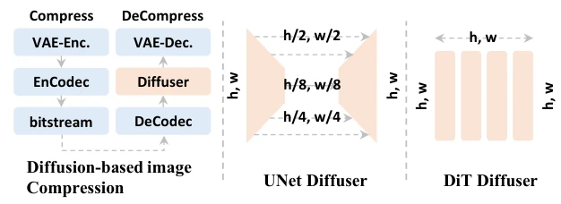
Figure 2. Architectural comparison. The left panel illustrates the overall diffusion-based image compression framework.
图2. 架构比较。左侧展示基于扩散的图像压缩整体框架。
U-Net-based diffusers perform multi-stage downsampling, while DiTs maintain a constant spatial resolution throughout the denoising process, making them naturally compatible with deeply compressed latent inputs.
基于 U-Net 的去噪器执行多级下采样，而 DiT 在整个去噪过程中保持空间分辨率不变，因此天然适合深度压缩的潜变量输入。
Diffusion Transformers. Diffusion models [13, 42] synthesize data by iteratively denoising Gaussian noise toward the data manifold.
扩散 Transformer。扩散模型 [13,42] 通过迭代去噪，将高斯噪声逐步变换到数据流形以合成数据。
Early variants typically adopt U-Net backbones [39], whose multi-scale encoder–decoder structures provide strong spatial locality but suffer from limited scalability and global consistency.
早期模型通常采用 U-Net 骨干 [39]，其多尺度编解码结构具有较强空间局部性，但可扩展性和全局一致性有限。
Diffusion Transformers (DiTs) [33] overcome these issues by replacing the U-Net with cascaded transformer blocks that operate at a single, constant spatial resolution.
扩散 Transformer [33] 以在单一固定空间分辨率下运行的级联 Transformer 块替代 U-Net，克服了这些问题。
This design eliminates hierarchical downsampling, enabling globally coherent representation learning and improved scalability.
这一设计去除了层级下采样，支持全局一致的表示学习，并提高了可扩展性。
Recent extensions—such as PixArt-α [5], SD3 [9], and Flux [19]—have scaled DiTs to large, multimodal generation, while efficient variants like Sana [47] accelerate inference via linear attention mechanisms.
PixArt-α [5]、SD3 [9]、Flux [19] 等后续工作将 DiT 扩展到大规模多模态生成，而 Sana [47] 等高效变体通过线性注意力加速推理。
Flow Matching. Traditional diffusion models can be interpreted as discretized stochastic differential equations (SDEs) that gradually transform noise into data through a stochastic denoising process.
流匹配。传统扩散模型可解释为离散化随机微分方程，通过随机去噪逐步将噪声变换为数据。
Flow Matching (FM) [23, 25] reformulates this paradigm as a deterministic ordinary differential equation (ODE), where a neural network learns a velocity field that continuously transports samples from a simple prior to the data manifold [44].
流匹配（FM）[23,25] 将这一范式改写为确定性常微分方程，由神经网络学习速度场，将样本从简单先验连续输送到数据流形 [44]。
Compared with stochastic diffusion, FM provides a mathematically elegant and computationally efficient framework, often enabling faster sampling and consistent results.
相比随机扩散，流匹配提供了数学形式简洁、计算高效的框架，通常能加快采样并得到稳定结果。
Diffusion-based Image Compression. Recent studies have explored integrating diffusion models into learned image compression (LIC) to leverage their powerful generative priors for perceptually faithful reconstruction.
基于扩散的图像压缩。近期研究尝试将扩散模型融入学习式图像压缩，利用强大生成先验实现具有感知保真度的重建。
Early methods such as DiffEIC [32], Yang and Mandt [49], and CDC [21] encode images into compact latent conditions that guide pretrained diffusion models during reconstruction.
DiffEIC [32]、Yang和Mandt的方法 [49] 及 CDC [21] 等早期工作，将图像编码为紧凑潜变量条件，在重建时引导预训练扩散模型。
Later approaches—including RDEIC [22] and ResULIC [16]—reinterpret the denoising trajectory as a progressive reconstruction process, where each diffusion step refines the compressed representation.
RDEIC [22] 和 ResULIC [16] 等后续方法将去噪轨迹解释为渐进重建过程，每个扩散步都细化压缩表示。
Other works [37, 38] employ diffusion priors for post-quantization enhancement.
另有工作 [37,38] 使用扩散先验进行量化后增强。
Recent advances—such as StableCodec [53], OneDC [48], and OSCAR [11]—further improve efficiency by collapsing multi-step diffusion into single-step inference.
StableCodec [53]、OneDC [48] 和 OSCAR [11] 等新方法将多步扩散压缩为单步推理，进一步提高效率。
Existing methods often adapts pretrained Stable Diffusion models [34, 39] for practical codec deployment.
现有方法通常通过适配预训练 Stable Diffusion 模型 [34,39] 来部署实际编解码器。
We introduce DiT-IC, an aligned Diffusion Transformer framework for efficient image compression.
我们提出用于高效图像压缩的对齐扩散 Transformer 框架 DiT-IC。
Unlike U-Net-based diffusion models that operate in shallow latent spaces (typically 8×), DiT-IC performs diffusion directly within a deeper 32× latent domain, achieving higher efficiency while maintaining perceptual fidelity.
基于 U-Net 的扩散模型通常在8倍下采样的浅潜空间中工作，而 DiT-IC 直接在32倍下采样的更深潜空间中执行扩散，提高效率并保持感知保真度。
To adapt the generative diffusion process to the reconstruction-oriented objective of compression, DiT-IC incorporates a set of alignment mechanisms across three key dimensions:
为使扩散生成过程适应压缩的重建目标，DiT-IC 从三个维度引入对齐机制：
(1) from generation to reconstruction, aligning diffusion strength with latent variance;
（1）从生成到重建，将扩散强度与潜变量方差对齐；
(2) from multi-step to single-step inference, improving efficiency without compromising quality;
（2）从多步到单步推理，在不损害质量的情况下提高效率；
and (3) from text-guided to latent-conditioned diffusion, enabling text-free decoding.
（3）从文本引导到潜变量条件扩散，实现无文本解码。
Together, these components form an end-to-end aligned diffusion framework that delivers efficient image compression, as illustrated in Fig. 3.
这些组件共同构成图3所示的端到端对齐扩散框架，实现高效图像压缩。
: freeze : train or finetune SQ : scalar quantization t: timestep c: condition f: sampling factor
图例：冻结；训练或微调；SQ为标量量化；t为时间步；c为条件；f为采样因子。
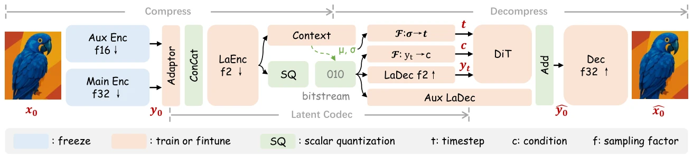
Figure 3. Overview of the proposed DiT-IC framework. Following StableCodec [53], we adopt ELIC [12] as our auxiliary encoder.
图3. DiT-IC 框架概览。遵循 StableCodec [53]，我们采用 ELIC [12] 作为辅助编码器。
Traditional flow matching [23] learns a continuous vector field to transport samples from Gaussian noise
传统流匹配 [23] 学习连续向量场，通过概率流常微分方程将样本从高斯噪声
However, in image compression, the initial state is not pure noise but a quantized latent
然而，在图像压缩中，初始状态并非纯噪声，而是已经接近数据流形的量化潜变量
This observation motivates a one-step reconstruction flow, replacing the iterative denoising process with a single adaptive transformation.
这促使我们提出单步重建流，用一次自适应变换替代迭代去噪。
As shown in Fig. 4, compression noise
如图4所示，压缩噪声
Therefore, a single global timestep cannot adequately model the local noise characteristics.
因此，单一全局时间步不足以描述局部噪声特性。
To address this, we introduce a variance-guided pseudo-timestep mapping.
为此，我们引入方差引导的伪时间步映射。
In learned compression, the latent distribution is typically parameterized as
在学习式压缩中，潜变量分布通常参数化为
where the predicted mean
预测均值
We leverage this inherent uncertainty to define a differentiable mapping:
我们利用这种内在不确定性定义可微映射：
where
其中，
Higher variance corresponds to larger
较高的方差对应较大的
Given the adaptive timestep field
给定自适应时间步场
which effectively collapses the multi-step denoising trajectory into a single spatially adaptive transformation—achieving high-fidelity reconstruction (Fig. 5).
这一过程将多步去噪轨迹压缩为单次空间自适应变换，实现高保真重建，如图5所示。
Recent advances also explore adaptive generation strength.
近期工作也探索了自适应生成强度。
UPSR [51] leverages reconstruction error to adjust noise strength; EAR [27] modulates generation using image entropy; and OSCAR [11] introduces a image-wise rate–timestep mapping for variable-rate diffusion.
UPSR [51] 利用重建误差调节噪声强度，EAR [27] 使用图像熵调节生成过程，OSCAR [11] 则为可变码率扩散引入图像级码率—时间步映射。
Our method extends this idea to a pixel-wise variance–timestep mapping, providing finer-grained adaptation for one-step reconstruction.
我们将这一思路扩展为逐位置的方差—时间步映射，为单步重建提供更细粒度的适应能力。
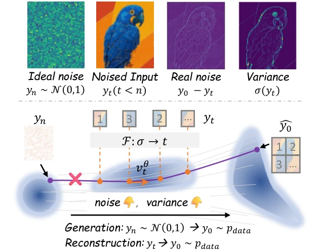
Figure 4. Variance-Guided Flow Matching. Unlike standard diffusion that starts from Gaussian noise, compression reconstruction begins from a quantized latent yt containing structured noise.
图4. 方差引导的流匹配。标准扩散从高斯噪声开始，而压缩重建从含有结构化噪声的量化潜变量 yt 开始。
The local variance σ(yt) measures spatial uncertainty, which we map to pseudo-timesteps t = F(σ) for spatially adaptive one-step flow matching.
局部方差 σ(yt) 衡量空间不确定性，我们将其映射为伪时间步 t=F(σ)，实现空间自适应的单步流匹配。
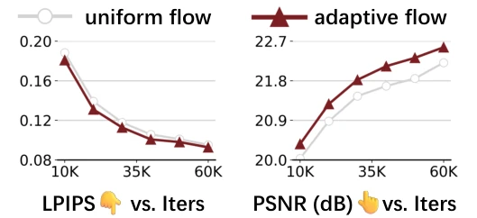
Figure 5. Ablation study of variance-guided reconstruction flow.
图5. 方差引导重建流的消融研究。
While the variance-guided flow enables adaptive one-step reconstruction, fine-tuning pretrained multi-step models remains challenging in the absence of explicit denoising trajectory supervision.
尽管方差引导流支持自适应单步重建，在缺乏显式去噪轨迹监督时，微调预训练多步模型仍然具有挑战。
Conventional diffusion distillation frameworks [29, 40] depend on a pre-trained teacher to provide intermediate denoising trajectories—an approach infeasible for compression, where no multi-step reference exists within the deep latent domain.
传统扩散蒸馏框架 [29,40] 依赖预训练教师提供中间去噪轨迹，但压缩的深层潜空间中不存在这样的多步参考，因此这一方式难以直接使用。
To overcome this, we propose a self-distillation alignment strategy that replaces external supervision with an internal reference from the encoder.
为解决这一问题，我们提出自蒸馏对齐策略，用编码器内部参考替代外部监督。
The encoder’s latent output y0, which already lies close to the data manifold, naturally serves as a self-supervised target for the denoised latent ˆy0 predicted by the diffusion transformer.
编码器潜变量输出 y0 已接近数据流形，自然可以作为扩散 Transformer 预测的去噪潜变量 ŷ0 的自监督目标。
We freeze the encoder and jointly optimize the DiT and decoder so that ˆy0 aligns with y0, effectively collapsing the multi-step denoising process into a deterministic, single-step reconstruction—while preserving the latent geometry defined by the encoder.
我们冻结编码器，联合优化 DiT 与解码器，使 ŷ0 与 y0 对齐，将多步去噪压缩为确定性的单步重建，同时保留编码器定义的潜空间几何结构。
The pipeline is shown in Fig. 6.
流程如图6所示。
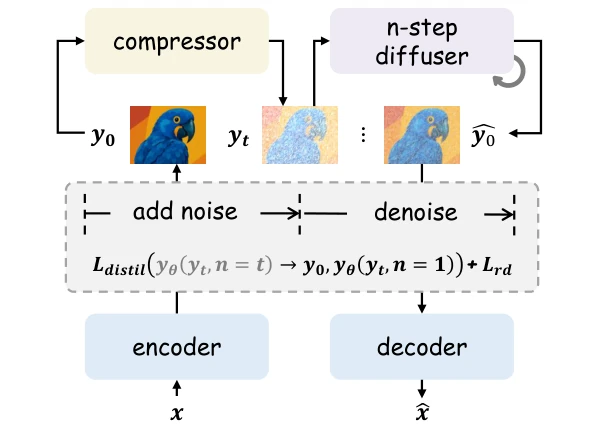
Figure 6. Self-Distillation Alignment.
图6. 自蒸馏对齐。
DiT-IC distills the multistep diffusion process into a single forward pass by aligning its denoised latent with the frozen encoder representation, while jointly optimizing the diffusion transformer and decoder.
DiT-IC 将去噪后的潜变量与冻结编码器表示对齐，同时联合优化扩散 Transformer 和解码器，将多步扩散过程蒸馏为一次前向传播。
yθ(·) denotes the denoised output, and Lrd indicates the rate–distortion loss.
yθ(·) 表示去噪输出，Lrd 表示率失真损失。
Formally, we apply a marginal cosine alignment loss:
形式上，采用带间隔的余弦对齐损失：
where m is a small margin encouraging angular separation between distinct latent directions.
其中，m 是一个较小的间隔项，原文称其用于鼓励不同潜变量方向之间的角度分离。
In contrast to previous diffusion-based codecs [48, 53], which partially fine-tune the encoder or freeze the decoder, our approach fixes the encoder while jointly adapting the DiT and decoder.
以往扩散编解码器 [48,53] 部分微调编码器或冻结解码器，而我们固定编码器，同时适配 DiT 与解码器。
This co-adaptation stabilizes training, enhances perceptual fidelity, and supports efficient reconstruction in deep latent spaces, as illustrated in Fig. 7.
如图7所示，这种共同适配稳定训练、提高感知保真度，并支持深层潜空间中的高效重建。
Conceptually, our self-distillation resembles feature-alignment paradigms used in generative modeling—such as VA-VAE [50] aligned with DINOv2 [31]—but differs in that it leverages the frozen VAE encoder itself as an intrinsic alignment target for reconstruction.
从概念上看，我们的自蒸馏类似于生成建模中的特征对齐范式，例如与 DINOv2 [31] 对齐的 VA-VAE [50]，但其区别在于使用冻结的 VAE 编码器本身作为重建的内在对齐目标。
Moreover, integrating recent adversarial distillation techniques [41] could further enhance the perceptual realism of reconstructed images in future work.
此外，未来可以结合近期的对抗蒸馏技术 [41]，进一步提高重建图像的感知真实感。
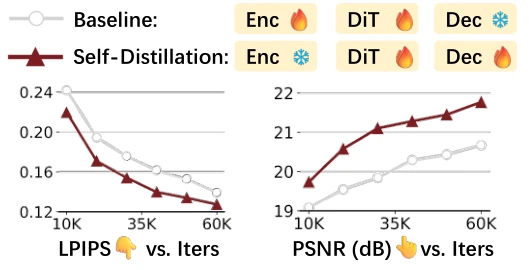
Figure 7. Ablation of self-distillation alignment.
图7. 自蒸馏对齐的消融。
Pretrained diffusion transformers typically rely on text-conditioned guidance to control semantics.
预训练扩散 Transformer 通常依赖文本条件引导来控制语义。
However, for reconstruction-oriented tasks, textual prompts are often inefficient and suboptimal: they may fail to capture fine-grained spatial structures and require large vision–language models (VLMs), introducing additional latency and stochasticity during inference.
然而，对于面向重建的任务，文本提示往往效率不足且并非最佳选择：它们可能无法捕获细粒度空间结构，还需要大型视觉语言模型，增加推理延迟与随机性。
We observe that the latent representation
我们观察到，潜在表示
Motivated by this, we propose Latent-Conditioned Guidance, shown in Fig. 8, replacing the text condition
受此启发，我们提出图 8 所示的潜变量条件引导，以学习得到的潜变量条件替代文本条件
where
其中，
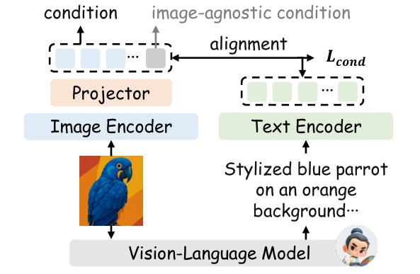
Figure 8. Latent-Conditioned Guidance.
图8. 潜变量条件引导。
We replace text-based guidance in DiT with a latent-conditioned projection derived from the compressed representation by aligning projected latent and text embeddings, enabling text-free conditioning at inference.
通过对齐投影后的潜变量与文本嵌入，我们使用由压缩表示得到的潜变量条件投影，替代 DiT 的文本引导，实现推理阶段的无文本条件控制。
To ensure semantic alignment, we perform contrastive co-alignment between projected latent and text embeddings using a CLIP-style objective [36]:
为确保语义对齐，我们采用类似 CLIP 的目标 [36]，对投影潜变量嵌入与文本嵌入进行对比式联合对齐：
where i and j index samples within a batch, and τ is the temperature of the contrastive distribution.
其中，i和j表示批次内样本索引，τ为对比分布的温度参数。
During training, latent and text embeddings are co-aligned; at inference, the model relies solely on latent conditioning.
训练时，潜变量与文本嵌入共同对齐；推理时，模型仅依赖潜变量条件。
Compared to fixed, image-agnostic conditioning [53], this approach improves perceptual fidelity and semantic consistency (Fig. 9).
与固定且不感知图像内容的条件 [53] 相比，该方法提高了感知保真度与语义一致性，如图9所示。
Similar ideas appear in OneDC [48], which uses image tokenizers as supervision.
OneDC [48] 也具有类似思想，不过使用图像 tokenizer 提供监督。
Although the mechanisms differ, both underscore the critical role of condition in diffusion-based reconstruction.
尽管机制不同，两者都强调条件信息在扩散重建中的关键作用。
Notably, at extremely low bitrates (e.g., < 0.01 bpp), the boundary between compression and generation becomes blurred.
值得注意的是，在极低码率下，例如低于0.01 bpp时，压缩与生成之间的边界变得模糊。
As observed in [16], when visual bits are highly constrained, text tokens may dominate the bit budget.
如文献 [16] 所观察到的，当视觉比特受到严格限制时，文本 token 可能占据主要比特预算。
In such scenarios, the latent alone may lack sufficient semantic information, and incorporating auxiliary text priors could further enhance perceptual quality, representing an promising direction for future research.
在这种情况下，仅靠潜变量可能缺少足够语义信息，加入辅助文本先验可能进一步提高感知质量，是未来值得研究的方向。
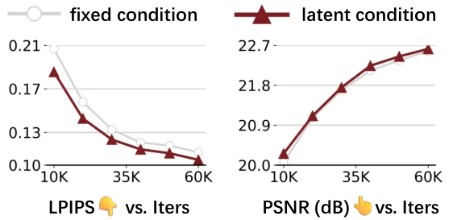
Figure 9. Ablation of latent-conditioned guidance.
图9. 潜变量条件引导的消融。
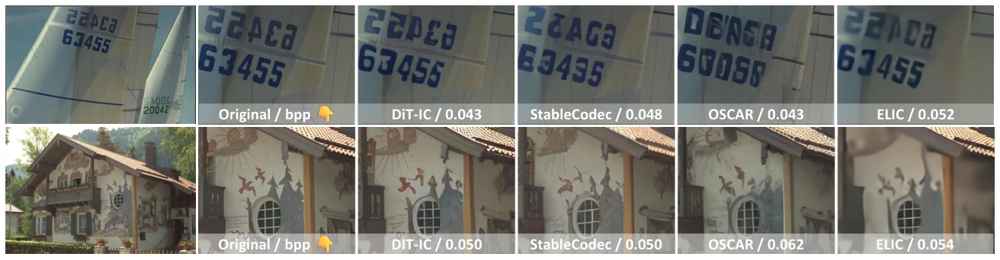
Figure 10. Visualization comparison.
图10. 可视化比较。
MSE-optimized ELIC [12] suffers from high-frequency detail loss, whereas diffusion-based codecs such as StableCodec [53] and OSCAR [11] produce inconsistent semantic content, e.g., incorrect numbers or window panes.
针对 MSE 优化的 ELIC [12] 存在高频细节丢失，而 StableCodec [53]、OSCAR [11] 等扩散编解码器会产生不一致的语义内容，例如错误数字或窗格。
In contrast, DiT-IC achieves a more favorable balance between perceptual quality and semantic consistency.
DiT-IC 在感知质量与语义一致性之间取得了较好的平衡。
To efficiently adapt a pretrained text-to-image diffusion transformer (SANA [47]) for compression, we insert lightweight LoRA [14] adapters, avoiding costly full-model retraining.
为高效地将预训练文本到图像扩散 Transformer SANA [47] 适配到压缩，我们插入轻量 LoRA [14] 适配器，避免昂贵的全模型重训练。
We train DiT-IC across a wide range of bitrates using a two-stage implicit bitrate pruning (IBP) strategy [53]:
我们使用两阶段隐式码率剪枝（IBP）策略 [53]，在较宽码率范围内训练 DiT-IC。
Stage 1 trains the model with a small rate–distortion trade-off λbase ∈{0.1, 0.5}, relaxing entropy constraints to preserve rich feature representations.
阶段一使用较小的权衡系数 λbase∈{0.1,0.5}，放宽熵约束，保留丰富特征表示。
Stage 2 fine-tunes the same model with a larger λtarget ∈{0.5, 1.0, 2.0, 4.0, 8.0, 16.0}, progressively tightening bitrate constraints and incorporating adversarial objectives for enhanced perceptual quality.
阶段二用较大的 λtarget∈{0.5,1.0,2.0,4.0,8.0,16.0} 微调同一模型，逐步收紧码率约束，并加入对抗目标提升感知质量。
The overall optimization objective is formulated as:
总体优化目标如下：
In practice, we set the LoRA ranks to 32 for the VAE decoder and 64 for the diffusion transformer.
实践中，VAE 解码器与扩散 Transformer 的 LoRA 秩分别设为32和64。
For latent–semantic co-alignment, we adopt InternVL [6, 45] as the vision–language backbone, consistent with the original DiT setup.
对于潜变量—语义联合对齐，我们采用 InternVL [6,45] 作为视觉语言骨干，与原 DiT 设置一致。
Additional implementation details are provided in the supplementary material.
更多实现细节见补充材料。
Training. We train DiT-IC on a curated dataset of roughly 150K high-quality images with resolutions above 512 × 512, aggregated from CLIC 2020 Professional [43], MLIC-Train-100K [15], and LSDIR [20].
训练。我们在约15万张高质量图像组成的数据集上训练 DiT-IC，图像分辨率均高于512×512，数据来自 CLIC 2020 Professional [43]、MLIC-Train-100K [15] 和 LSDIR [20]。
Training follows a two-stage schedule: the first stage runs for 100K iterations on 256 × 256 patches with a batch size of 32, and the second stage continues for 60K iterations on 512×512 patches with a batch size of 16.
训练分两阶段：首先在256×256图像块上训练10万次迭代，批量大小32；随后在512×512图像块上继续训练6万次迭代，批量大小16。
We adopt the AdamW optimizer [26] with an initial learning rate of 1 × 10−4, decayed by 50% at 50%, 80%, and 90% of total iterations.
使用 AdamW [26]，初始学习率为10⁻⁴，并在总迭代数的50%、80%和90%处将学习率减半。
Consistent with diffusion model practices [9], we maintain an exponential moving average (EMA) of model with a decay rate of 0.999.
遵循扩散模型常用做法 [9]，我们使用衰减率0.999的模型指数移动平均。
Datasets. We evaluate DiT-IC on three widely used benchmarks: the CLIC 2020 Professional test set [43], DIV2K validation set [1], and Kodak dataset [10], following the same protocol as [21, 53].
数据集。按照与文献 [21,53] 相同的协议，我们在三个常用基准上评测：CLIC 2020 Professional 测试集 [43]、DIV2K 验证集 [1] 和 Kodak [10]。
The CLIC 2020 and DIV2K sets contain 428 and 100 images at 2K resolution, while Kodak includes 24 natural images of 768 × 512 pixels.
CLIC 2020 和 DIV2K 分别包含428张和100张2K分辨率图像，Kodak 包含24张768×512自然图像。
All evaluations are performed at the original image resolutions without resizing.
所有评测均使用原始分辨率，不进行缩放。
Metrics. We comprehensively assess the rate–distortion–perception trade-off.
指标。我们全面评价码率、失真与感知之间的权衡。
Bitrate is reported in bits per pixel (bpp).
码率以每像素比特数 bpp 报告。
Reconstruction fidelity is measured using PSNR and MS-SSIM [46], and perceptual quality is evaluated with LPIPS [52] (AlexNet variant by default) and DISTS [7].
重建保真度采用 PSNR 和 MS-SSIM [46]，感知质量采用 LPIPS [52]，默认 AlexNet 版本，以及 DISTS [7]。
Following recent findings [4, 53], we emphasize DISTS as a more reliable indicator of perceptual similarity, particularly in low-bitrate regimes.
依据近期研究 [4,53]，我们强调 DISTS 在低码率下是较可靠的感知相似性指标。
Baselines. To ensure fair and reproducible comparisons, we primarily include open-source methods as baselines.
基线。为保证公平性和可复现性，主要采用开源方法作为基线。
Some novel approaches, such as [38] and OneDC [48], have not yet released official implementations or publications, and are therefore excluded from our current benchmark for fairness.
部分新方法，如文献 [38] 和 OneDC [48]，在本文写作时尚未提供官方实现或公开论文，因此未纳入当前基准。
We plan to incorporate these methods in future revisions once official resources become available.
我们计划在官方资源可用后的修订中补充这些方法。
All trainings are conducted on two NVIDIA RTX Pro 6000 GPUs, while evaluation and latency benchmarking are performed on an A100 GPU.
所有训练使用两块 NVIDIA RTX Pro 6000 GPU，评测与延迟测试使用 A100 GPU。
Further implementation details are provided in the supplementary material.
更多实现细节见补充材料。
Quantitative Performance Comparison. Fig. 11 and Table 1 provide a comprehensive comparison of rate–distortion efficiency and perceptual fidelity across representative image compression methods.
定量性能比较。图11和表1全面比较了代表性图像压缩方法的率失真效率和感知保真度。
Conventional VAE-based codecs [17, 30, 35] offer fast inference but are constrained by limited representational capacity, resulting in suboptimal visual realism.
传统基于 VAE 的编解码器 [17,30,35] 推理较快，但受表示能力限制，视觉真实感仍不理想。
In contrast, early diffusion-based codecs [16, 18, 21, 22, 28] markedly improve perceptual quality, yet suffer from excessive computational overhead—typically requiring 4–50 iterative denoising steps and over one second of decoding time per image.
早期扩散编解码器 [16,18,21,22,28] 显著提高感知质量，却带来较高计算开销，通常需要4至50次迭代去噪，每张图像解码超过1秒。
Recent one-step diffusion codecs [11, 48, 53] alleviate this issue by accelerating reconstruction, but they largely depend on pretrained Stable Diffusion backbones.
近期单步扩散编解码器 [11,48,53] 通过加速重建缓解这一问题，但主要依赖预训练 Stable Diffusion 骨干。
Due to their U-Net-based architectures, these models struggle to operate in deeper latent domains, leading to persistent inefficiency.
由于使用 U-Net，这些模型难以在更深潜空间运行，仍存在效率问题。
In contrast, DiT-IC performs diffusion entirely within a deeper latent space using a transformer-based architecture, effectively reducing complexity while preserving expressive capacity.
DiT-IC 则通过 Transformer 架构在更深潜空间中完成整个扩散过程，在保留表达能力的同时降低复杂度。
These results highlight the advantages of our diffusion transformer paradigm in achieving efficient and high-fidelity image compression.
这些结果说明，扩散 Transformer 范式有利于实现高效、高保真图像压缩。
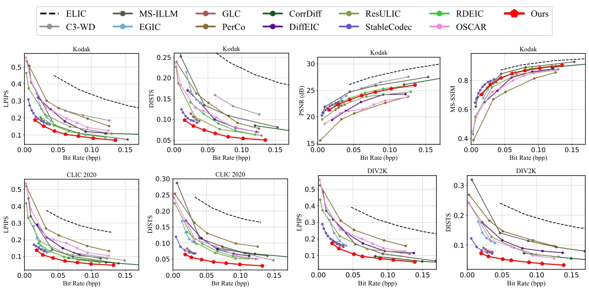
Figure 11. Rate-distortion-perception curve comparisons of different methods on the Kodak, CLIC2020 and DIV2K dataset.
图11. 不同方法在 Kodak、CLIC2020 和 DIV2K 上的码率—失真—感知曲线比较。
Table 1. Comprehensive comparison with state-of-the-art methods in terms of BD-rate (↓) [3].
表1. 使用 BD-rate↓ [3] 与先进方法进行全面比较。
“Diff. Reso.” and “Code Reso.” denote the latent resolutions used in the diffusion and coding stages, respectively, where f indicates the spatial downsampling factor relative to the pixel domain, and d denotes the number of channels.
“Diff. Reso.”和“Code Reso.”分别表示扩散与编码阶段的潜变量分辨率，f是相对于像素域的空间下采样因子，d是通道数。
Latency is measured as the per-image decoding time (for 1024 × 1024 resolution) on a single A100 GPU; ♣marks FP16 inference and ♠marks FP32.
延迟是在单块 A100 上，对1024×1024图像测得的单图解码时间；♣表示FP16推理，♠表示FP32。
“DiT-IC (baseline)” represents the variant without the proposed alignment strategies.
“DiT-IC (baseline)”表示去除所提出对齐策略的变体。
The best results are highlighted in red, and the second-best in blue.
最佳结果以红色标示，次佳以蓝色标示。
| Methods / 方法 | Diff. Reso. / 扩散分辨率 | Code Reso. / 编码分辨率 | Diff. Steps / 扩散步数 | Params / 参数量 | Latency / 延迟 | LPIPS Kodak | LPIPS CLIC | LPIPS DIV2K | DISTS Kodak | DISTS CLIC | DISTS DIV2K | Avg. LPIPS | Avg. DISTS |
|---|---|---|---|---|---|---|---|---|---|---|---|---|---|
| C3-WD [2] (INR) | – | – | – | – | – | 12.90 | -47.14 | – | 62.25 | -46.62 | – | -17.12 | 7.82 |
| MS-ILLM [30] (VAE) | – | f16d256 | – | 181M | 0.17s | -38.13 | -46.75 | -39.52 | 11.54 | -21.10 | 17.17 | -41.47 | 2.54 |
| EGIC [17] (VAE) | – | f16d320 | – | 37M | – | -47.93 | -67.75 | -61.75 | 0.07 | -60.69 | -61.19 | -59.14 | -40.60 |
| GLC [35] (VAE) | – | f16d256 | – | 105M | 0.18s | -72.04 | -78.57 | -75.90 | -63.21 | -84.33 | -87.60 | -75.50 | -78.38 |
| PerCo [4, 18] | f8d4 | f8-64d320 | 20 | 4.3B | 8.8s | 0.00 | 0.00 | 0.00 | 0.00 | 0.00 | 0.00 | 0.00 | 0.00 |
| CorrDiff [28] | f0d3 | f16d320 | 8 | 73M | – | -69.76 | -72.94 | -73.08 | 13.90 | -57.71 | -67.32 | -71.93 | -37.04 |
| DiffEIC [21] | f8d4 | f16d320 | 50 | 1.0B | 12.4s | -33.91 | -40.47 | -34.03 | -25.37 | -36.04 | -39.76 | -36.14 | -33.72 |
| ResULIC [16] | f8d4 | f32d192 | 4 | 12.3B | 0.83s | -57.39 | -66.50 | -62.93 | -65.31 | -68.64 | -62.96 | -62.27 | -65.64 |
| StableCodec [53] | f8d4 | f64d320 | 1 | 1.5B | 0.34s | -78.34 | -80.21 | -79.02 | -70.48 | -90.24 | -91.14 | -79.19 | -83.95 |
| RDEIC [22] | f8d4 | f16d256 | 5 | 1.0B | 1.5s | -67.99 | -71.95 | – | -39.02 | -53.05 | – | -69.97 | -46.04 |
| OSCAR [11] | f8d4 | f8-64d320 | 1 | 987M | 0.32s | -17.80 | -14.74 | -24.58 | -46.18 | -59.82 | -69.15 | -19.04 | -58.38 |
| DiT-IC (baseline / 基线) | f32d32 | f64d320 | 1 | 990M | 0.27s ♠ | -62.36 | -68.15 | -64.50 | -54.20 | -73.58 | -73.78 | -65.00 | -67.19 |
| DiT-IC (Ours / 本文) | f32d32 | f64d320 | 1 | 1.0B | (0.15s) ♣ | -81.11 | -86.73 | -83.11 | -75.95 | -94.45 | -93.25 | -83.65 | -87.88 |
Qualitative Visualization. While MSE-optimized codecs such as ELIC [12] maintain overall semantic consistency, they tend to produce overly smooth textures that deviate from human perceptual preference.
定性可视化。针对 MSE 优化的 ELIC [12] 等编解码器虽能保持整体语义一致性，但纹理往往过度平滑，不符合人类感知偏好。
Diffusion-based codecs, on the other hand, enhance perceptual realism but often introduce color shifts or semantic distortions—undesirable in compression scenarios where fidelity is critical.
扩散编解码器能提高真实感，却常引入颜色偏移或语义失真，这对于保真度重要的压缩场景并不理想。
As illustrated in Fig. 10, StableCodec [53] misrepresents fine-grained details such as the boat number and window panes, reflecting unstable semantic reconstruction.
如图10所示，StableCodec [53] 会错误重建船身数字和窗格等细节，反映语义重建不稳定。
In contrast, DiT-IC achieves a better trade-off between perceptual quality and structural fidelity under comparable entropy constraints.
相比之下，在相近熵约束下，DiT-IC 在感知质量与结构保真度之间取得了较好权衡。
Additional visualizations are provided in the supplementary material.
更多可视化见补充材料。
Ablation results, are trained on 256 × 256 images with 60K iterations, including Table 2 and those reported in Sec. 3.
消融模型在256×256图像上训练6万次迭代，结果包括表2及第3节中的实验。
Loss Formulations. Introducing the adversarial term Ladv yields perceptually sharper and more realistic reconstructions, aligning better with human visual preference.
损失形式。加入对抗项 Ladv 后，重建更锐利、更真实，更符合人类视觉偏好。
However, this comes at the cost of slight degradation in quantitative metrics.
但这会使部分定量指标略有下降。
Given its substantial improvement in perceptual realism, we retain Ladv in the final objective.
考虑到感知真实感的明显改善，我们在最终目标中保留 Ladv。
Additionally, incorporating the DISTS term further strengthens correlation with human perception, especially under low-bitrate regimes, albeit with a minor trade-off in distortion-oriented metrics.
此外，加入 DISTS 项进一步增强了与人类感知的相关性，尤其是在低码率下，但对面向失真的指标存在轻微折中。
Table 2. Ablation study results measured by BD-rate ↓[3].
表2. 采用 BD-rate↓ [3] 衡量的消融结果。
| Configuration / 配置 | PSNR | MS-SSIM | LPIPS | DISTS |
|---|---|---|---|---|
| DiT-IC | 0.00% | 0.00% | 0.00% | 0.00% |
| w/o | -37.10% | -21.54% | -2.27% | -1.80% |
| w/o DISTS / 无 DISTS | -2.15% | -1.30% | -1.83% | 5.69% |
| DiT from scratch / 从头训练 DiT | 16.80% | 13.41% | 22.00% | 32.45% |
| VAE/DiT rank / 秩 16/16 | 8.24% | 6.43% | 12.77% | 13.92% |
| VAE/DiT rank / 秩 32/32 | 3.10% | 2.76% | 5.31% | 5.56% |
| Full finetuning / 全量微调 | 3.52% | 3.21% | 7.95% | 8.05% |
Training Strategies. We initialize DiT-IC using pretrained SANA weights [47].
训练策略。我们使用预训练 SANA 权重 [47] 初始化 DiT-IC。
Training the entire model from scratch leads to noticeable performance degradation, likely due to limited training data scale.
从头训练整个模型会使性能明显下降，可能是因为训练数据规模有限。
We further examine different LoRA configurations for both the VAE and DiT modules.
我们进一步研究 VAE 与 DiT 的不同 LoRA 配置。
A rank setting of 32/64 achieves the best balance between adaptation capacity and stability, whereas full finetuning slightly degrades performance—possibly because large-scale parameter updates distort the pretrained distribution manifold when trained under small-batch conditions.
32/64 的秩配置在适配能力与稳定性之间取得最佳平衡，而全量微调略微降低性能，可能是小批量条件下的大规模参数更新破坏了预训练分布流形。
Complexity. Table 3 compares the latency (in second) of DiT-IC and StableCodec [53].
复杂度。表3比较了 DiT-IC 与 StableCodec [53] 的延迟，单位为秒。
For fair comparison, tiled VAE coding is disabled in both models.
为公平比较，两种模型均关闭分块 VAE 编解码。
Despite adopting single-step diffusion in both frameworks, DiT-IC achieves consistently lower runtime, particularly at higher resolutions.
尽管两者都采用单步扩散，DiT-IC 的运行时间持续更低，尤其在高分辨率下更明显。
At 1024² and 2048², diffusion latency is reduced by 50%–85%, and overall time by up to 76%, owing to its operation in a deeper latent space.
在1024²和2048²分辨率下，由于在更深潜空间运行，扩散延迟降低50%至85%，总体时间最多降低76%。
Notably, StableCodec exhibits a sharp latency surge at 4096², likely caused by fragmented GPU computation and excessive memory transfer overhead.
StableCodec 在4096²分辨率下出现明显延迟激增，可能由 GPU 计算碎片化和过多显存传输开销导致。
In contrast, DiT-IC maintains stable scalability and efficient high-resolution reconstruction, demonstrating strong hardware adaptability.
DiT-IC 则保持稳定扩展性和高效高分辨率重建，体现较强硬件适应能力。
Table 3. Runtime latency (s) comparison in FP32 precision.
表3. FP32精度下的运行延迟比较，单位为秒。
| Methods / 方法 | Resolution / 分辨率 | VAE | Codec / 编解码 | Diffusion / 扩散 |
|---|---|---|---|---|
| StableCodec | – | SD-VAE [41] | f8 → f64 | U-Net |
| DiT-IC | – | SANA-VAE [47] | f32 → f64 | DiT |
| StableCodec | 1024² | 0.19 | 0.04 | 0.11 |
| DiT-IC | 1024² | 0.21 (+11%) | 0.008 (-30%) | 0.055 (-50%) |
| StableCodec | 2048² | 0.82 | 0.05 | 0.8 |
| DiT-IC | 2048² | 0.85 (+4%) | 0.012 (-76%) | 0.12 (-85%) |
| StableCodec | 4096² | 85 | 0.13 | 10.3 |
| DiT-IC | 4096² | 3.3 (-96%) | 0.022 (-83%) | 0.47 (-95%) |
We presented DiT-IC, an Aligned Diffusion Transformer for efficient image compression.
本文提出用于高效图像压缩的对齐扩散 Transformer DiT-IC。
By shifting the diffusion process into deeply compressed latent domains, DiT-IC effectively mitigates the inherent inefficiency of diffusion sampling.
通过将扩散过程移入深度压缩潜空间，DiT-IC 有效缓解扩散采样固有的低效率。
Through variance-guided reconstruction flow, self-distillation alignment, and latent-conditioned guidance, it aligns pretrained diffusion transformers toward the compression objective, enabling one-step, high-fidelity reconstruction within a 32× latent space.
方差引导重建流、自蒸馏对齐和潜变量条件引导使预训练扩散 Transformer 与压缩目标对齐，在32倍下采样潜空间中实现单步高保真重建。
Extensive experiments demonstrate that DiT-IC achieves state-of-the-art rate–distortion trade-offs, up to 30× faster decoding, and significantly reduced memory cost compared with existing diffusion-based codecs.
大量实验表明，相比现有扩散编解码器，DiT-IC 获得领先的率失真权衡，解码速度最高提升约30倍，显存成本显著下降。
We believe this alignment perspective will inspire future research on generative compression and efficient visual representation learning.
我们认为，这一对齐视角将启发生成式压缩与高效视觉表示学习的未来研究。
This work was supported in part by Natural Science Foundation of China (Grant No. 62401251, 62431011) and Natural Science Foundation of Jiangsu Province (Grant No. BK20241226, BK20243038).
本工作部分得到国家自然科学基金项目62401251、62431011，以及江苏省自然科学基金项目BK20241226、BK20243038的支持。
The authors would like to express their sincere gratitude to the Interdisciplinary Research Center for Future Intelligent Chips (Chip-X) and Yachen Foundation for their invaluable support.
作者衷心感谢未来智能芯片交叉研究中心（Chip-X）与雅辰基金会提供的支持。
[1] Eirikur Agustsson and Radu Timofte. Ntire 2017 challenge on single image super-resolution: Dataset and study. In Proceedings of the IEEE conference on computer vision and pattern recognition workshops, pages 126–135, 2017. 6
《NTIRE 2017 单图像超分辨率挑战：数据集与研究》
[2] Jona Ball´e, Luca Versari, Emilien Dupont, Hyunjik Kim, and Matthias Bauer. Good, cheap, and fast: Overfitted image compression with wasserstein distortion. In Proceedings of the Computer Vision and Pattern Recognition Conference, pages 23259–23268, 2025. 7
《兼顾质量、成本与速度：采用 Wasserstein 失真的过拟合图像压缩》
[3] Gisle Bjontegaard. Calculation of average psnr differences between rd-curves. ITU SG16 Doc. VCEG-M33, 2001. 7, 8
《率失真曲线之间平均 PSNR 差异的计算》
[4] Marlene Careil, Matthew J Muckley, Jakob Verbeek, and St´ephane Lathuili`ere. Towards image compression with perfect realism at ultra-low bitrates. In The Twelfth International Conference on Learning Representations, 2023. 2, 6, 7
《迈向超低码率下具有完美真实感的图像压缩》
[5] Junsong Chen, Jincheng Yu, Chongjian Ge, Lewei Yao, Enze Xie, Yue Wu, Zhongdao Wang, James Kwok, Ping Luo, Huchuan Lu, et al. Pixart-α: Fast training of diffusion transformer for photorealistic text-to-image synthesis. arXiv preprint arXiv:2310.00426, 2023. 2, 3
《PixArt-α：快速训练扩散 Transformer 以实现逼真的文本到图像合成》
[6] Zhe Chen, Jiannan Wu, Wenhai Wang, Weijie Su, Guo Chen, Sen Xing, Muyan Zhong, Qinglong Zhang, Xizhou Zhu, Lewei Lu, et al. Internvl: Scaling up vision foundation models and aligning for generic visual-linguistic tasks. In Proceedings of the IEEE/CVF Conference on Computer Vision and Pattern Recognition, pages 24185–24198, 2024. 6
《InternVL：扩展视觉基础模型并对齐通用视觉语言任务》
[7] Keyan Ding, Kede Ma, Shiqi Wang, and Eero P Simoncelli. Image quality assessment: Unifying structure and texture similarity. IEEE transactions on pattern analysis and machine intelligence, 44(5):2567–2581, 2020. 6
《图像质量评估：统一结构与纹理相似性》
[8] Zhihao Duan, Ming Lu, Jack Ma, Yuning Huang, Zhan Ma, and Fengqing Zhu. Qarv: Quantization-aware resnet vae for lossy image compression. IEEE Transactions on Pattern Analysis and Machine Intelligence, 46(1):436–450, 2023. 2
《QARV：用于有损图像压缩的量化感知 ResNet VAE》
[9] Patrick Esser, Sumith Kulal, Andreas Blattmann, Rahim Entezari, Jonas M¨uller, Harry Saini, Yam Levi, Dominik Lorenz, Axel Sauer, Frederic Boesel, et al. Scaling rectified flow transformers for high-resolution image synthesis. In Forty-first international conference on machine learning, 2024. 2, 3, 6
《扩展整流流 Transformer 以合成高分辨率图像》
[10] R. Franzen. Kodak lossless true color image suite. http://r0k.us/graphics/kodak/, 1993. Accessed: 2025- 11-06. 6
《Kodak 无损真彩图像集》
[11] Jinpei Guo, Yifei Ji, Zheng Chen, Kai Liu, Min Liu, Wang Rao, Wenbo Li, Yong Guo, and Yulun Zhang. Oscar: Onestep diffusion codec across multiple bit-rates. arXiv preprint arXiv:2505.16091, 2025. 2, 3, 4, 6, 7, 8
《OSCAR：跨多码率的单步扩散编解码器》
[12] Dailan He, Ziming Yang, Weikun Peng, Rui Ma, Hongwei Qin, and Yan Wang. Elic: Efficient learned image compression with unevenly grouped space-channel contextual adaptive coding. In Proceedings of the IEEE/CVF conference on computer vision and pattern recognition, pages 5718–5727, 2022. 2, 3, 6, 8
《ELIC：采用非均匀分组空间–通道上下文自适应编码的高效学习式图像压缩》
[13] Jonathan Ho, Ajay Jain, and Pieter Abbeel. Denoising diffusion probabilistic models. Advances in neural information processing systems, 33:6840–6851, 2020. 3
《去噪扩散概率模型》
[14] Edward J Hu, Yelong Shen, Phillip Wallis, Zeyuan AllenZhu, Yuanzhi Li, Shean Wang, Lu Wang, Weizhu Chen, et al. Lora: Low-rank adaptation of large language models. ICLR, 1(2):3, 2022. 6
《LoRA：大语言模型的低秩适配》
[15] Wei Jiang and Ronggang Wang. Mlic++: Linear complexity multi-reference entropy modeling for learned image compression. In ICML 2023 Workshop Neural Compression: From Information Theory to Applications, 2023. 6
《MLIC++：用于学习式图像压缩的线性复杂度多参考熵建模》
[16] Anle Ke, Xu Zhang, Tong Chen, Ming Lu, Chao Zhou, Jiawen Gu, and Zhan Ma. Ultra lowrate image compression with semantic residual coding and compression-aware diffusion. In Forty-second International Conference on Machine Learning, 2025. 2, 3, 5, 7
《基于语义残差编码与压缩感知扩散的超低码率图像压缩》
[17] Nikolai K¨orber, Eduard Kromer, Andreas Siebert, Sascha Hauke, Daniel Mueller-Gritschneder, and Bj¨orn Schuller. Egic: enhanced low-bit-rate generative image compression guided by semantic segmentation. In European Conference on Computer Vision, pages 202–220. Springer, 2024. 7
《EGIC：语义分割引导的增强型低码率生成式图像压缩》
[18] Nikolai K¨orber, Eduard Kromer, Andreas Siebert, Sascha Hauke, Daniel Mueller-Gritschneder, and Bj¨orn Schuller. Perco (SD): Open perceptual compression. In Workshop on Machine Learning and Compression, NeurIPS 2024, 2024. 7
《PerCo（SD）：开放的感知压缩》
[19] Black Forest Labs. Flux. https://github.com/black-forest-labs/flux, 2024. 3
《Flux》
[20] Yawei Li, Kai Zhang, Jingyun Liang, Jiezhang Cao, Ce Liu, Rui Gong, Yulun Zhang, Hao Tang, Yun Liu, Denis Demandolx, et al. Lsdir: A large scale dataset for image restoration. In Proceedings of the IEEE/CVF Conference on Computer Vision and Pattern Recognition, pages 1775–1787, 2023. 6
《LSDIR：大规模图像复原数据集》
[21] Zhiyuan Li, Yanhui Zhou, Hao Wei, Chenyang Ge, and Jingwen Jiang. Towards extreme image compression with latent feature guidance and diffusion prior. IEEE Transactions on Circuits and Systems for Video Technology, 2024. 3, 6, 7
《利用潜在特征引导和扩散先验实现极限图像压缩》
[22] Zhiyuan Li, Yanhui Zhou, Hao Wei, Chenyang Ge, and Ajmal Mian. Rdeic: Accelerating diffusion-based extreme image compression with relay residual diffusion. IEEE Transactions on Circuits and Systems for Video Technology, 2025. 2, 3, 7
《RDEIC：利用接力残差扩散加速基于扩散的极限图像压缩》
[23] Yaron Lipman, Ricky TQ Chen, Heli Ben-Hamu, Maximilian Nickel, and Matt Le. Flow matching for generative modeling. arXiv preprint arXiv:2210.02747, 2022. 3
《面向生成建模的流匹配》
[24] Jinming Liu, Heming Sun, and Jiro Katto. Learned image compression with mixed transformer-cnn architectures. In Proceedings of the IEEE/CVF conference on computer vision and pattern recognition, pages 14388–14397, 2023. 2
《基于 Transformer–CNN 混合架构的学习式图像压缩》
[25] Xingchao Liu, Chengyue Gong, and Qiang Liu. Flow straight and fast: Learning to generate and transfer data with rectified flow. arXiv preprint arXiv:2209.03003, 2022. 3
《让流更直、更快：用整流流学习生成和迁移数据》
[26] Ilya Loshchilov and Frank Hutter. Decoupled weight decay regularization. arXiv preprint arXiv:1711.05101, 2017. 6
《解耦权重衰减正则化》
[27] Xiaoxiao Ma, Feng Zhao, Pengyang Ling, Haibo Qiu, Zhixiang Wei, Hu Yu, Jie Huang, Zhixiong Zeng, and Lin Ma. Towards better & faster autoregressive image generation: From the perspective of entropy. arXiv preprint arXiv:2510.09012, 2025. 4
《迈向更好、更快的自回归图像生成：熵的视角》
[28] Yiyang Ma, Wenhan Yang, and Jiaying Liu. Correcting diffusion-based perceptual image compression with privileged end-to-end decoder. In International Conference on Machine Learning, pages 34075–34093. PMLR, 2024. 7
《使用具备特权信息的端到端解码器校正基于扩散的感知图像压缩》
[29] Chenlin Meng, Robin Rombach, Ruiqi Gao, Diederik Kingma, Stefano Ermon, Jonathan Ho, and Tim Salimans. On distillation of guided diffusion models. In Proceedings of the IEEE/CVF conference on computer vision and pattern recognition, pages 14297–14306, 2023. 4
《关于引导式扩散模型的蒸馏》
[30] Matthew J Muckley, Alaaeldin El-Nouby, Karen Ullrich, Herv´e J´egou, and Jakob Verbeek. Improving statistical fidelity for neural image compression with implicit local likelihood models. In International Conference on Machine Learning, pages 25426–25443. PMLR, 2023. 7
《利用隐式局部似然模型提升神经图像压缩的统计保真度》
[31] Maxime Oquab, Timoth´ee Darcet, Th´eo Moutakanni, Huy Vo, Marc Szafraniec, Vasil Khalidov, Pierre Fernandez, Daniel Haziza, Francisco Massa, Alaaeldin El-Nouby, et al. Dinov2: Learning robust visual features without supervision. arXiv preprint arXiv:2304.07193, 2023. 5
《DINOv2：无监督学习稳健视觉特征》
[32] Zhihong Pan, Xin Zhou, and Hao Tian. Extreme generative image compression by learning text embedding from diffusion models. arXiv preprint arXiv:2211.07793, 2022. 3
《从扩散模型学习文本嵌入以实现极限生成式图像压缩》
[33] William Peebles and Saining Xie. Scalable diffusion models with transformers. In Proceedings of the IEEE/CVF international conference on computer vision, pages 4195–4205, 2023. 2, 3
《基于 Transformer 的可扩展扩散模型》
[34] Dustin Podell, Zion English, Kyle Lacey, Andreas Blattmann, Tim Dockhorn, Jonas M¨uller, Joe Penna, and Robin Rombach. Sdxl: Improving latent diffusion models for high-resolution image synthesis. arXiv preprint arXiv:2307.01952, 2023. 3
《SDXL：面向高分辨率图像合成的改进潜扩散模型》
[35] Linfeng Qi, Zhaoyang Jia, Jiahao Li, Bin Li, Houqiang Li, and Yan Lu. Generative latent coding for ultra-low bitrate image and video compression. IEEE Transactions on Circuits and Systems for Video Technology, 2025. 7
《面向超低码率图像与视频压缩的生成式潜变量编码》
[36] Alec Radford, Jong Wook Kim, Chris Hallacy, Aditya Ramesh, Gabriel Goh, Sandhini Agarwal, Girish Sastry, Amanda Askell, Pamela Mishkin, Jack Clark, et al. Learning transferable visual models from natural language supervision. In International conference on machine learning, pages 8748–8763. PmLR, 2021. 5
《从自然语言监督学习可迁移的视觉模型》
[37] Lucas Relic, Roberto Azevedo, Markus Gross, and Christopher Schroers. Lossy image compression with foundation diffusion models. In European Conference on Computer Vision, pages 303–319. Springer, 2024. 3
《使用基础扩散模型的有损图像压缩》
[38] Lucas Relic, Roberto Azevedo, Yang Zhang, Markus Gross, and Christopher Schroers. Bridging the gap between gaussian diffusion models and universal quantization for image compression. In Proceedings of the Computer Vision and Pattern Recognition Conference, pages 2449–2458, 2025. 3, 6
《弥合高斯扩散模型与通用量化在图像压缩中的差距》
[39] Robin Rombach, Andreas Blattmann, Dominik Lorenz, Patrick Esser, and Bj¨orn Ommer. High-resolution image synthesis with latent diffusion models. In Proceedings of the IEEE/CVF conference on computer vision and pattern recognition, pages 10684–10695, 2022. 2, 3
《基于潜扩散模型的高分辨率图像合成》
[40] Tim Salimans and Jonathan Ho. Progressive distillation for fast sampling of diffusion models. arXiv preprint arXiv:2202.00512, 2022. 4
《用于扩散模型快速采样的渐进蒸馏》
[41] Axel Sauer, Dominik Lorenz, Andreas Blattmann, and Robin Rombach. Adversarial diffusion distillation. In European Conference on Computer Vision, pages 87–103. Springer, 2024. 5, 8
《对抗扩散蒸馏》
[42] Yang Song, Jascha Sohl-Dickstein, Diederik P Kingma, Abhishek Kumar, Stefano Ermon, and Ben Poole. Score-based generative modeling through stochastic differential equations. arXiv preprint arXiv:2011.13456, 2020. 3
《基于随机微分方程的分数生成建模》
[43] George Toderici, Lucas Theis, Nick Johnston, Eirikur Agustsson, Fabian Mentzer, Johannes Ball´e, Wenzhe Shi, and Radu Timofte. Clic 2020: Challenge on learned image compression. Retrieved March, 29:2021, 2020. 6
《CLIC 2020：学习式图像压缩挑战赛》
[44] Alexander Tong, Kilian Fatras, Nikolay Malkin, Guillaume Huguet, Yanlei Zhang, Jarrid Rector-Brooks, Guy Wolf, and Yoshua Bengio. Improving and generalizing flow-based generative models with minibatch optimal transport. arXiv preprint arXiv:2302.00482, 2023. 3
《使用小批量最优传输改进并推广基于流的生成模型》
[45] Weiyun Wang, Zhangwei Gao, Lixin Gu, Hengjun Pu, Long Cui, Xingguang Wei, Zhaoyang Liu, Linglin Jing, Shenglong Ye, Jie Shao, et al. Internvl3.5: Advancing open-source multimodal models in versatility, reasoning, and efficiency. arXiv preprint arXiv:2508.18265, 2025. 6
《InternVL3.5：提升开源多模态模型的多功能性、推理与效率》
[46] Zhou Wang, Eero P Simoncelli, and Alan C Bovik. Multiscale structural similarity for image quality assessment. In The thrity-seventh asilomar conference on signals, systems & computers, 2003, pages 1398–1402. Ieee, 2003. 6
《用于图像质量评估的多尺度结构相似性》
[47] Enze Xie, Junsong Chen, Junyu Chen, Han Cai, Haotian Tang, Yujun Lin, Zhekai Zhang, Muyang Li, Ligeng Zhu, Yao Lu, et al. Sana: Efficient high-resolution image synthesis with linear diffusion transformers. arXiv preprint arXiv:2410.10629, 2024. 2, 3, 6, 8
《Sana：使用线性扩散 Transformer 高效合成高分辨率图像》
[48] Naifu Xue, Zhaoyang Jia, Jiahao Li, Bin Li, Yuan Zhang, and Yan Lu. One-step diffusion-based image compression with semantic distillation. arXiv preprint arXiv:2505.16687, 2025. 3, 5, 6, 8
《通过语义蒸馏实现基于单步扩散的图像压缩》
[49] Ruihan Yang and Stephan Mandt. Lossy image compression with conditional diffusion models. Advances in Neural Information Processing Systems, 36:64971–64995, 2023. 3
《使用条件扩散模型的有损图像压缩》
[50] Jingfeng Yao, Bin Yang, and Xinggang Wang. Reconstruction vs. generation: Taming optimization dilemma in latent diffusion models. In Proceedings of the Computer Vision and Pattern Recognition Conference, pages 15703–15712, 2025. 2, 5
《重建与生成：缓解潜扩散模型的优化困境》
[51] Leheng Zhang, Weiyi You, Kexuan Shi, and Shuhang Gu. Uncertainty-guided perturbation for image super-resolution diffusion model. In Proceedings of the Computer Vision and Pattern Recognition Conference, pages 17980–17989, 2025. 4
《用于图像超分辨率扩散模型的不确定性引导扰动》
[52] Richard Zhang, Phillip Isola, Alexei A Efros, Eli Shechtman, and Oliver Wang. The unreasonable effectiveness of deep features as a perceptual metric. In Proceedings of the IEEE conference on computer vision and pattern recognition, pages 586–595, 2018. 6
《深度特征作为感知度量为何出奇有效》
[53] Tianyu Zhang, Xin Luo, Li Li, and Dong Liu. Stablecodec: Taming one-step diffusion for extreme image compression. arXiv preprint arXiv:2506.21977, 2025. 2, 3, 5, 6, 7, 8
《StableCodec：将单步扩散用于极限图像压缩》